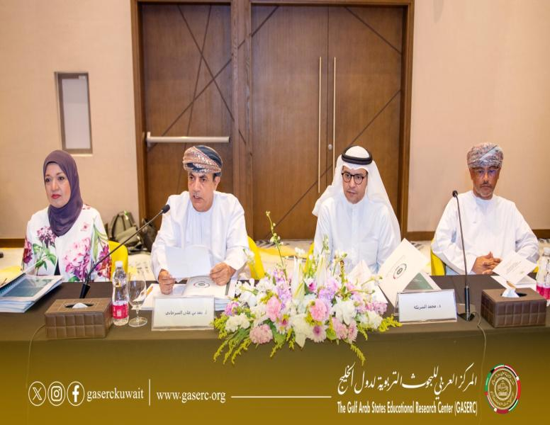

جائزة المعلم الخليجي للبحوث الإجرائية
جائزة يقدّمها المركز للمعلمين في الدول الأعضاء. الشروط ودليل التقديم في صفحة الجائزة.
آخر موعد 31 أكتوبر 2026 · باقٍ 13 يوماً
قدّم الآنالمكتبة التربوية الخليجية الرقمية
دراسات المركز ومجلته المحكّمة وتقاريره ومعاجمه، مفهرسة بالعنوان والموضوع والسنة.



27 سبتمبر 2026مشغل تربويالمركز ينظم مشغلاً تربوياً في مسقط لمناقشة الإطار الاستراتيجي للتعليم العام في دول مجلس التعاونجائزة يقدّمها المركز للمعلمين في الدول الأعضاء. الشروط ودليل التقديم في صفحة الجائزة.
آخر موعد 31 أكتوبر 2026 · باقٍ 13 يوماً
قدّم الآنلا توجد فرص مفتوحة حالياً. تختفي الفرص تلقائياً بعد انتهاء موعدها.
لا توجد مناقصات أو دعوات أخرى مفتوحة الآن.